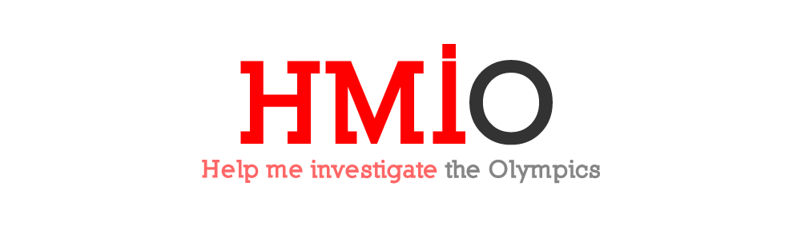

Hinir kapítalísku Ólympíuleikar
Ólympíuleikarnir eru merkilegt fyrirbæri. Íþróttafólk frá yfir 200 löndum kemur saman. Það eru ekki margir viðburðir sem draga til sín fulltrúa frá eins mörgum þjóðlöndum. Umstangið í kringum leikana hefur aukist í hvert sinn og þeir Ólympíuleikar sem við sjáum í dag eiga fátt sameiginlegt (eðlilega) með leikunum á fyrri hluta tuttugustu aldar.
Með hverjum leikum eykst markaðssetningin, brjálsemin og sölumennskan í kringum þá. Leikarnir sem nú standa fyrir dyrum í London eru þar engin undantekning. Sólveig Anna Jónsdóttir fjallar aðeins um það hér. Ég ætla hinsvegar að benda ykkur á hvernig gagnablaðamennska getur flett ofan af því sem sumir vilja halda leyndu.
Breski blaðamaðurinn Paul Bradshaw rekur (í samstarfi við aðra) vefsvæðið Help Me Investigate og í tengslum við Ólympíuleikana sérstakan undirvef, Help Me Investigate the Olympics, þar sem hann notast við aðferðir gagnablaðamennsku (e. data journalism) og blaðamennsku með þátttöku almennings (e. citizen journalism).
Fyrir þessa Ólympíuleika ákváðu Bretar að fá yfir 8000 manns til að hlaupa með ólympíueldinn um allt Bretland. Hugmyndin var að hægt væri að tilnefna fólk sem átti á einhvern hátt að vera einkennandi fyrir ólympíuhugsjónina. Hlaupið átti að þjappa Bretum saman að baki leikunum. Nöfn, myndir og stuttur texti um einstaklingana var svo birtur á heimasíðu leikanna. Svona er þetta útskýrt:
Together with our Presenting Partners Coca Cola, Lloyds TSB and Samsung, London 2012 has found 8,000 truly inspirational people from across the UK to carry the Olympic Flame – a truly once-in-a-lifetime experience.
We have done our best to make sure each Torchbearer carries the Flame in, or near to, their local area to help friends and family cheer them on along the way.
Í seinustu viku tók Paul saman lista yfir þá þátttakendur í kyndilhlaupinu sem ekki hafa sérstakan texta um sig og af hverju þau voru valin. Það reyndust vera hátt í 500 manns. Svo bað hann almenning um að hjálpa sér að hafa uppi á þeim. Ég hef aðeins aðstoðað við gagnaöflun undanfarna daga. Þannig grunar mig t.d. að Balázs Várkonyi sem hljóp um Swanage þann 13. júlí sé Balázs Várkonyi, forstjóri Extreme Digital, söluaðila Samsung í Ungverjalandi.
Það hefur leitt af sér fréttir um að helstu styrktaraðilar leikanna, svo sem Samsung, hafi fengið að tilnefna starfsmenn sína til að taka þátt í hlaupinu, án nokkurra sérstakra tengsla við þá staði sem þeir hlupu um. Þýska blaðið Der Tagesspiel fjallaði í gær um málið hér (samantekt á ensku hér). Paul skrifaði um málið fyrir Telegraph hér og Guardian fjallaði um rannsóknina hér.
Ef ekki hefði komið til aðferða við gagnablaðamennsku (safna saman öllum þeim hlaupurum sem ekki er gert grein fyrir vélrænt) og blaðamennsku með þátttöku almennings (fá almenning til að aðstoða við að hafa uppi á hlaupurunum), þá hefðu þessar fréttir aldrei fengið að heyrast eða í það minnsta verið mun erfiðari í framleiðslu.
Enn á eftir að finna töluverðan hluta þeirra sem ekkert er vitað um. Ef þig langar að hjálpa þá eru leiðbeiningar hér.